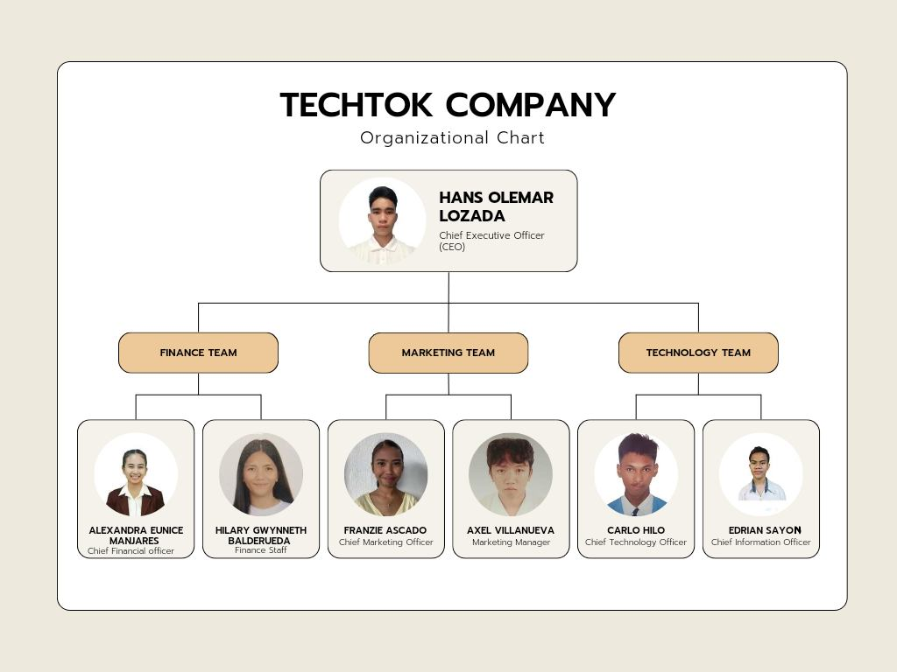

Nature of the Company: Tech-Tok blends innovation, creativity, and commerce, allowing users to explore, learn, and trade tech seamlessly.
Mission: To create a vibrant ecosystem for tech-based education, entertainment, and e-commerce.
Vision: Redefining how people interact with technology.
Goals:
Tech-Tok provides an integrated platform with the following features:
Tech-Tok’s leadership team ensures innovation, financial growth, and seamless operations:
Organizational Chart:
